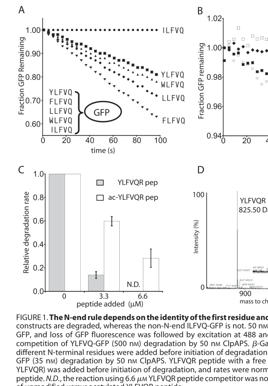

clpS encodes the ClpS adaptor protein that modulates substrate specificity of ClpAP-mediated ATP-dependent protein degradation.
Definition: An adaptor activity that binds Clp chaperone/protease machinery (e.g. ClpA) and an N-degron-bearing substrate, determining substrate selection for ATP-dependent protein degradation by the ClpAP protease.
Justification: GOA currently captures only broad degradation processes (GO:0006508, GO:0030163) for ClpS and provides no molecular-function row. While GO:0030674 (protein-macromolecule adaptor activity) is the best available MF and is used as the core_functions molecular_function, a dedicated Clp/N-recognin adaptor term as a child of GO:0030674 would more precisely capture the N-degron-recognition and ClpA-delivery activity of ClpS.
Parent term: protein-macromolecule adaptor activity
Supporting Evidence:
| GO Term | Evidence | Action | Reason |
|---|---|---|---|
|
GO:0006508
proteolysis
|
IEA
GO_REF:0000120 |
MARK AS OVER ANNOTATED |
Summary: Proteolysis is a broad pathway-level parent annotation for ClpS rather than the more specific ClpAP degradation process in which ClpS acts as an adaptor.
Reason: GO:0006508 proteolysis is defined as the hydrolysis of proteins by cleavage of peptide bonds, an activity carried out by the ClpP peptidase, not by ClpS. ClpS is an adaptor that modulates ClpAP substrate specificity and does not catalyze peptide-bond hydrolysis, so annotating it to proteolysis risks implying direct enzymatic cleavage. The companion annotation GO:0030163 protein catabolic process (breakdown of a protein with or without peptide-bond hydrolysis) more accurately captures ClpS's role as a participant in the degradation pathway, and a Clp adaptor molecular function term would capture the core activity.
Supporting Evidence:
file:PSEPK/clpS/clpS-uniprot.txt
modulation of the specificity of the ClpAP-
file:PSEPK/clpS/clpS-goa.tsv
GO:0006508 proteolysis
file:PSEPK/clpS/clpS-deep-research-falcon.md
ClpS is not a protease or enzyme catalyzing a chemical transformation; rather it is an **adaptor** that alters substrate selection by the ClpAP degradation machine.
|
|
GO:0030163
protein catabolic process
|
IEA
GO_REF:0000002 |
ACCEPT |
Summary: Protein catabolic process captures the ClpAP degradation pathway in which ClpS acts as an adaptor.
Reason: UniProt describes ClpS as modulating ClpAP-mediated ATP-dependent protein degradation, and falcon deep research confirms ClpS delivers N-degron substrates to the ClpAP protease for ATP-dependent degradation, placing the gene in the protein catabolic process / N-end rule pathway.
Supporting Evidence:
file:PSEPK/clpS/clpS-uniprot.txt
mediated ATP-dependent protein degradation
file:PSEPK/clpS/clpS-goa.tsv
GO:0030163 protein catabolic process
file:PSEPK/clpS/clpS-deep-research-falcon.md
It functions in the bacterial **N-degron/N-end rule pathway**, which links protein half-life to N-terminal identity; ClpS acts downstream of N-degron generation and upstream of ClpA/ClpP-mediated proteolysis
|
|
GO:0030674
protein-macromolecule adaptor activity
|
ISS
file:PSEPK/clpS/clpS-deep-research-falcon.md |
NEW |
Summary: ClpS is an adaptor/N-recognin that bridges N-degron-bearing substrate proteins to the ClpA unfoldase, a molecular function not currently captured by any MF annotation in GOA (which has only BP terms).
Reason: ClpS is explicitly described as an adaptor that brings together substrate and the ClpAP machinery rather than an enzyme; protein-macromolecule adaptor activity is the most precise existing MF and is missing from the GOA record. Supported by UniProt SUBUNIT data and falcon deep research; assigned by sequence/family similarity (ISS).
Supporting Evidence:
file:PSEPK/clpS/clpS-uniprot.txt
Binds to the N-terminal domain of the chaperone ClpA
file:PSEPK/clpS/clpS-deep-research-falcon.md
ClpS is not a protease or enzyme catalyzing a chemical transformation; rather it is an **adaptor** that alters substrate selection by the ClpAP degradation machine.
|
|
GO:0005829
cytosol
|
ISS
file:PSEPK/clpS/clpS-deep-research-falcon.md |
NEW |
Summary: ClpS acts in the cytosol together with the cytosolic ClpA/ClpP AAA+ protease complex; no localization is currently annotated in GOA.
Reason: The best-supported localization for ClpS is cytosolic, consistent with the cytosolic ClpAP machinery acting on soluble intracellular proteins. Inferred from conserved ClpS-family mechanism (ISS); no KT2440-specific localization experiment exists.
Supporting Evidence:
file:PSEPK/clpS/clpS-deep-research-falcon.md
the most strongly supported localization is **cytosolic**, consistent with ClpA/ClpP operating as a cytosolic AAA+ protease complex acting on soluble intracellular proteins
|
Q: Which N-degron substrate classes are recognized by P. putida KT2440 ClpS?
Experiment: Use purified KT2440 ClpS/ClpA/ClpP with N-end-rule reporter substrates to quantify ClpS-dependent degradation specificity.
Type: in vitro ClpAP degradation assay
The research report should be a detailed narrative explaining the function, biological processes, and localization of the gene product. Citations should be given for all claims.
You should prioritize authoritative reviews and primary scientific literature when conducting research. You can supplement
this with annotations you find in gene/protein databases, but these can be outdated or inaccurate.
We are specifically interested in the primary function of the gene - for enzymes, what reaction is catalyzed, and what is the substrate specificity? For transporters, what is the substrate? For structural proteins or adapters, what is the broader structural role? For signaling molecules, what is the role in the pathway.
We are interested in where in or outside the cell the gene product carries out its function.
We are also interested in the signaling or biochemical pathways in which the gene functions. We are less interested in broad pleiotropic effects, except where these elucidate the precise role.
Include evidence where possible. We are interested in both experimental evidence as well as inference from structure, evolution, or bioinformatic analysis. Precise studies should be prioritized over high-throughput, where available.
The UniProt accession Q88FS4 from Pseudomonas putida KT2440 corresponds to the ATP-dependent Clp protease adapter protein ClpS, a small bacterial adaptor/N-recognin protein that binds specific N-terminal degrons (N-degrons) and delivers substrates to the ClpAP protease (ClpA unfoldase + ClpP peptidase). This identity matches the conserved ClpS architecture described in mechanistic literature: a folded ClpS core harboring a hydrophobic N-degron pocket plus an intrinsically disordered N-terminal extension (NTE) that engages the ClpA pore loops (kim2022structuralprinciplesof pages 46-50, dougan2010thebacterialn‐end pages 6-8). The clpS gene is commonly genomically linked to clpA, consistent with bacterial operon organization for ClpAP-associated factors (kim2022structuralprinciplesof pages 46-50).
The N-end rule—now often encompassed by the broader term N-degron pathways—links a protein’s metabolic stability to features of its N-terminus, frequently the identity of the N-terminal residue and its local sequence context. In bacteria, this pathway is implemented through ATP-dependent proteolysis by ClpAP and specificity/adaptation by ClpS (dougan2010thebacterialn‐end pages 2-3, dougan2010thebacterialn‐end pages 3-5).
A canonical Gram-negative/proteobacterial model includes:
- ClpAP (AAA+ unfoldase ClpA + protease ClpP)
- ClpS adaptor (N-recognin)
- N-terminal aminoacyl-transferases such as Aat (LFTR) and in some taxa Bpt, which can convert “secondary” destabilizing N-termini into “primary” ClpS-recognized N-degrons by appending residues such as Leu/Phe (kim2022structuralprinciplesof pages 37-41, dougan2010thebacterialn‐end pages 5-6).
Dougan et al. (2010) emphasize the hierarchical nature of bacterial N-end rule signals and that—despite a strong mechanistic framework—validated natural substrate sets were historically limited, motivating continued discovery work (dougan2010thebacterialn‐end pages 2-3).
ClpS is not a protease or enzyme catalyzing a chemical transformation; rather it is an adaptor that alters substrate selection by the ClpAP degradation machine. Structurally, ClpS is a small (~10–12 kDa) protein with an extended N-terminus and a C-terminal core containing:
- Region A: a ClpA-interaction surface required for docking to ClpA N-domains
- A distal hydrophobic pocket that binds the N-terminal “type 2” primary destabilizing residues (Leu, Phe, Tyr, Trp) (dougan2010thebacterialn‐end pages 6-8).
In the best-characterized Gram-negative system (E. coli), ClpS recognizes primary destabilizing N-terminal residues—classically Leu, Phe, Tyr, Trp—via a hydrophobic pocket that also requires a free α-amino group at the N-terminus (ottofuelling2023physiologicalnendrule pages 33-37, wang2008tuningthestrength pages 4-5). The N-degron side chain fits into a ~200 Å(^3) pocket whose mouth is lined with residues (e.g., N34, D35/D36, T38, H66 in E. coli) that hydrogen bond to the N-terminal backbone and α-amino group, explaining residue-specific affinity and specificity (dougan2010thebacterialn‐end pages 6-8).
Sequence context around the N-terminus strongly modulates effective degradation:
- Adjacent acidic residues can markedly weaken apparent affinity of the degradation reaction (wang2008tuningthestrength pages 4-5).
- An unstructured N-terminal segment and additional downstream features are often required for productive engagement by the ClpA pore loops (kim2022structuralprinciplesof pages 37-41, kim2022structuralprinciplesof pages 46-50).
Modern mechanistic models describe ClpS as an active delivery factor, not merely a passive tether. ClpS engages ClpA in two ways:
1) The ClpS core contacts ClpA N-domains.
2) The intrinsically disordered NTE enters/contacts the ClpA axial channel and is engaged by pore loops (kim2022structuralprinciplesof pages 46-50, kim2022structuralprinciplesof pages 50-53).
ATP-driven pulling on the ClpS NTE is proposed to remodel the ClpS core and promote substrate handoff into the ClpA channel, after which ClpA can unfold and translocate the substrate into ClpP for proteolysis (kim2022structuralprinciplesof pages 50-53).
A key systems-level concept is that ClpS can promote degradation of N-end-rule substrates while inhibiting degradation of other substrates (e.g., ssrA-tagged substrates), effectively reprogramming ClpA substrate choice (kim2022structuralprinciplesof pages 46-50, ottofuelling2023physiologicalnendrule pages 33-37).
A mechanistic synthesis reports that high-affinity delivery complex formation depends on both the ClpS core and NTE: the ClpA(_6)•ClpS•N-degron assembly can exhibit KD < 50 nM, whereas using only the ClpS core yields KD ~1.5 µM (≈30-fold weaker), demonstrating the functional importance of the NTE (kim2022structuralprinciplesof pages 46-50).
Wang et al. (2008, J. Biol. Chem., publication month Sep 2008, URL: https://doi.org/10.1074/jbc.m802213200) quantified how residues near the N-terminus tune degradation:
- YLFVQEL-GFP: Km ≈ 26 nM, Vmax ≈ 1.2 min⁻¹
- YEFVQLE-GFP (acidic substitution near N-terminus): Km ≈ 1,400 nM, Vmax ≈ 1.4 min⁻¹
Thus, a local acidic context increased Km ~50-fold with little effect on Vmax, indicating a strong effect on effective binding/recognition rather than on catalytic turnover once engaged (wang2008tuningthestrength pages 4-5).
These kinetics are supported visually by the figures extracted from the same study (wang2008tuningthestrength media d2ea2e0e, wang2008tuningthestrength media dc4eaaa1).
In the same study, shortening the accessible N-terminal segment reduced or abolished degradation:
- YA4-GFP degraded ~5-fold slower than YA6-GFP
- YA3-GFP showed no detectable degradation unless unfolded
This supports a model where the N-degron must be positioned and spaced so ClpA can engage/unfold effectively (wang2008tuningthestrength pages 5-6).
For P. putida KT2440 ClpS (Q88FS4/PP_4009), the most strongly supported localization is cytosolic, consistent with ClpA/ClpP operating as a cytosolic AAA+ protease complex acting on soluble intracellular proteins and adaptors engaging the ClpA axial channel (kim2022structuralprinciplesof pages 46-50, ottofuelling2023physiologicalnendrule pages 33-37). No retrieved evidence indicates periplasmic, extracellular, or membrane localization for ClpS.
Biological processes supported by mechanism-based inference include:
- ATP-dependent proteolysis / protein quality control via ClpAP, specifically for proteins bearing ClpS-recognized N-degrons (ottofuelling2023physiologicalnendrule pages 33-37, dougan2010thebacterialn‐end pages 3-5).
- Proteome remodeling under stress, via regulated degradation and chaperone/protease networks.
Although direct KT2440 PP_4009-focused experiments were not retrieved, Pseudomonas-genus comparative evidence supports orthology and conserved pathway placement:
- In Pseudomonas fluorescens SS101, clpS is immediately upstream of clpA in a conserved neighborhood (“cspD clpS clpA infA …”), matching typical bacterial organization where clpS is in/near the clpA operon (song2015lipopeptidebiosynthesisin pages 1-3, kim2022structuralprinciplesof pages 46-50).
- SS101 ClpS shows 93% amino-acid identity to a P. putida KT2440 homolog (NP_746139.1), implying that KT2440 ClpS (including Q88FS4/PP_4009) is very likely a functional ClpAP adaptor with similar substrate preferences and mechanism (song2015lipopeptidebiosynthesisin pages 3-5).
A quantitative proteomics study of P. putida KT2440 under phenol-induced stress (Santos et al., Sep 2004, URL: https://doi.org/10.1002/pmic.200300793) did not mention clpS specifically in the retrieved excerpt, but it reported induction of ClpB and GrpE (chaperone/proteostasis network components) under increasing phenol stress, consistent with stress-linked protein quality control demands in KT2440 (santos2004insightsintopseudomonas pages 5-6). This is supportive background for why Clp-associated functions (including ClpAP/ClpS-mediated degradation) are expected to be relevant during environmental stress in Pseudomonas.
Varshavsky (2024, Sep 2024, PNAS, URL: https://doi.org/10.1073/pnas.2408697121) provides an authoritative, recent synthesis of N-degron pathway biology and emphasizes that N-terminal residues and modifications can act as degradation signals; he also notes bacterial N-recognins such as ClpS in the broader conceptual landscape (varshavsky2024ndegronpathways pages 2-3). However, he is cautious about the breadth of bacterial N-degron claims and notes that some bacterial aspects remain incompletely verified compared to eukaryotic fMet/N-degron systems (varshavsky2024ndegronpathways pages 3-4).
Presloid et al. (2024, Jun 2024, bioRxiv, URL: https://doi.org/10.1101/2024.06.12.598358) extend N-end rule mechanistic understanding beyond Proteobacteria by demonstrating in Mycolicibacterium smegmatis that ClpS binds canonical primary N-degrons and that N-degron binding can increase ClpS–ClpC1 affinity by ~30-fold, suggesting regulated prioritization of N-end rule proteolysis when substrates are abundant (presloid2024clpsdirectsdegradation pages 1-4, presloid2024clpsdirectsdegradation pages 12-14). Importantly, their work suggests secondary N-degrons may be absent in mycobacteria, highlighting that the classical Aat/Bpt-mediated hierarchical model may not generalize uniformly across bacteria (presloid2024clpsdirectsdegradation pages 12-14).
1) Engineering and synthetic biology: Because ClpS provides tunable recognition of N-terminal residues and controls degradation, it has been used as a component in engineered “posttranslational proofreading” systems to discriminate incorporation of amino acids by modulating N-end rule stability (conceptually aligned with ClpS’s N-degron recognition role) (wang2008tuningthestrength media 93593c36).
2) Microbial physiology and biotechnology (Pseudomonas context): The ClpAP protease system (ClpA/ClpP) has documented regulatory roles in Pseudomonas specialized metabolism and behaviors (e.g., lipopeptide biosynthesis regulation in P. fluorescens via ClpAP); given the conserved presence and high identity of ClpS in Pseudomonas, ClpS is expected to contribute to substrate selection for ClpAP in these contexts even when not explicitly tested (song2015lipopeptidebiosynthesisin pages 3-5, song2015lipopeptidebiosynthesisin pages 1-3).
3) Antibacterial target relevance (broader bacterial Clp systems): Clp protease systems—especially in mycobacteria—are being explored as antibacterial targets; work that clarifies adaptor-mediated substrate selection (including ClpS) helps rationalize target engagement and downstream proteostasis effects (presloid2024clpsdirectsdegradation pages 1-4).
Most defensible functional annotation (high confidence by homology + mechanism):
- Function: Cytosolic adaptor/N-recognin that binds canonical bacterial primary N-degrons (L/F/Y/W) and delivers substrates to ClpA/ClpP (ClpAP) for ATP-dependent degradation, modulating substrate selection and potentially competing with other ClpA substrates (ottofuelling2023physiologicalnendrule pages 33-37, kim2022structuralprinciplesof pages 46-50).
- Pathway: Bacterial N-end rule/N-degron proteolysis with potential upstream contribution of aminoacyl-transferases (Aat/LFTR; and in some taxa Bpt) that create/strengthen ClpS-recognized degrons (kim2022structuralprinciplesof pages 37-41, dougan2010thebacterialn‐end pages 5-6).
- Localization: Cytosol, interacting with cytosolic ClpA/ClpP (kim2022structuralprinciplesof pages 46-50).
- Genomic context: Likely adjacent to/operon-linked with clpA in Pseudomonas, supported by Pseudomonas neighborhood data and general bacterial organization (song2015lipopeptidebiosynthesisin pages 1-3, kim2022structuralprinciplesof pages 46-50).
Key uncertainty (organism-specific gap):
No retrieved primary study directly tests PP_4009/Q88FS4 loss-of-function phenotypes, native substrates, or condition-specific regulation in P. putida KT2440. Therefore, KT2440-specific claims beyond conserved function should be treated as inferred rather than experimentally verified.
| Category | Summary |
|---|---|
| Identity/domains | Q88FS4 / PP_4009 matches the bacterial ClpS family: a small (~10–12 kDa) adaptor with a conserved ClpS core plus an N-terminal extension; this aligns with the UniProt description for Pseudomonas putida KT2440 clpS rather than an unrelated protein family (kim2022structuralprinciplesof pages 46-50, dougan2010thebacterialn‐end pages 6-8). |
| Molecular function | ClpS is an adaptor/N-recognin, not an enzyme: it binds proteins bearing destabilizing N-terminal residues and delivers them to the ATP-dependent ClpAP protease for unfolding and degradation (ottofuelling2023physiologicalnendrule pages 33-37, kim2022structuralprinciplesof pages 37-41). |
| Pathway role | It functions in the bacterial N-degron/N-end rule pathway, which links protein half-life to N-terminal identity; ClpS acts downstream of N-degron generation and upstream of ClpA/ClpP-mediated proteolysis (dougan2010thebacterialn‐end pages 2-3, dougan2010thebacterialn‐end pages 3-5). |
| Interaction partners | The primary expected partners are ClpA (AAA+ unfoldase) and, indirectly via ClpA, ClpP (peptidase). ClpS contacts the ClpA N-domain through its core and engages ClpA pore loops via its N-terminal extension (kim2022structuralprinciplesof pages 46-50, kim2022structuralprinciplesof pages 50-53). |
| Substrate specificity (N-degrons) | Canonical bacterial primary N-degrons recognized by ClpS are Leu, Phe, Tyr, and Trp at the extreme N terminus; recognition also depends on a free α-amino group and is modulated by nearby sequence features (ottofuelling2023physiologicalnendrule pages 33-37, dougan2010thebacterialn‐end pages 6-8, wang2008tuningthestrength pages 4-5). |
| Mechanistic notes | Efficient delivery usually requires an unstructured N-terminal segment plus a downstream hydrophobic element; ClpA is thought to pull on the ClpS N-terminal extension, remodel ClpS, and transfer the bound substrate into the ClpA channel for translocation into ClpP (kim2022structuralprinciplesof pages 46-50, kim2022structuralprinciplesof pages 50-53). |
| Localization | The expected location is the cytoplasm/cytosol, consistent with ClpA/ClpP proteostasis machinery acting on soluble intracellular proteins; no evidence suggests secretion or membrane localization for PP_4009 (ottofuelling2023physiologicalnendrule pages 33-37, kim2022structuralprinciplesof pages 46-50). |
| Genomic context | In bacteria, clpS is usually in the same operon as clpA; this conserved organization supports assigning PP_4009 as the ClpA-associated adaptor in P. putida KT2440, although a KT2440-specific operon experiment was not retrieved here (kim2022structuralprinciplesof pages 46-50, lo2022expressionandfunction pages 7-9). |
| Regulation/conditions | Direct KT2440-specific regulation of clpS was not found. Broader Gram-negative evidence shows clpS/clpA expression can respond to stress/temperature, and P. putida proteomics under phenol stress detected induction of other Clp-network components (e.g., ClpB/GrpE), supporting a role for Clp proteostasis in stress adaptation (lo2022expressionandfunction pages 7-9, santos2004insightsintopseudomonas pages 5-6). |
| Quantitative data points | Relevant mechanistic benchmarks from bacterial systems: ClpA6•ClpS•N-degron complex KD < 50 nM, but ~1.5 µM for the ClpS core alone; acidic residue substitution near the N terminus can raise apparent Km ~50-fold (from ~26 nM to ~1400 nM) with little effect on Vmax; ClpS can reduce ClpAP ATP hydrolysis ~2-fold (kim2022structuralprinciplesof pages 46-50, wang2008tuningthestrength pages 4-5). |
| Evidence gaps | The gene symbol is not ambiguous here, but literature is limited for this specific P. putida KT2440 protein. No primary study was found directly validating PP_4009 localization, mutant phenotype, native substrates, or regulatory circuitry in KT2440, so much of the annotation is inferred from conserved ClpS-family mechanism in Gram-negative bacteria (ottofuelling2023physiologicalnendrule pages 33-37, santos2004insightsintopseudomonas pages 5-6). |
Table: This table summarizes the best-supported functional annotation for Pseudomonas putida KT2440 ClpS (Q88FS4/PP_4009), combining conserved mechanistic evidence with the limited organism-specific data available. It is useful for separating direct evidence from inference and highlighting remaining gaps.
Figures extracted from Wang et al. (2008) provide visual support for Km/Vmax shifts and degradation constraints driven by N-terminal sequence context (wang2008tuningthestrength media d2ea2e0e, wang2008tuningthestrength media dc4eaaa1).
References
(kim2022structuralprinciplesof pages 46-50): S Kim. Structural principles of substrate recognition and unfolding by the clpap and clpxp aaa+ proteases. Unknown journal, 2022.
(dougan2010thebacterialn‐end pages 6-8): D. A. Dougan, K. N. Truscott, and K. Zeth. The bacterial n‐end rule pathway: expect the unexpected. Molecular Microbiology, 76:545-558, May 2010. URL: https://doi.org/10.1111/j.1365-2958.2010.07120.x, doi:10.1111/j.1365-2958.2010.07120.x. This article has 127 citations and is from a domain leading peer-reviewed journal.
(dougan2010thebacterialn‐end pages 2-3): D. A. Dougan, K. N. Truscott, and K. Zeth. The bacterial n‐end rule pathway: expect the unexpected. Molecular Microbiology, 76:545-558, May 2010. URL: https://doi.org/10.1111/j.1365-2958.2010.07120.x, doi:10.1111/j.1365-2958.2010.07120.x. This article has 127 citations and is from a domain leading peer-reviewed journal.
(dougan2010thebacterialn‐end pages 3-5): D. A. Dougan, K. N. Truscott, and K. Zeth. The bacterial n‐end rule pathway: expect the unexpected. Molecular Microbiology, 76:545-558, May 2010. URL: https://doi.org/10.1111/j.1365-2958.2010.07120.x, doi:10.1111/j.1365-2958.2010.07120.x. This article has 127 citations and is from a domain leading peer-reviewed journal.
(kim2022structuralprinciplesof pages 37-41): S Kim. Structural principles of substrate recognition and unfolding by the clpap and clpxp aaa+ proteases. Unknown journal, 2022.
(dougan2010thebacterialn‐end pages 5-6): D. A. Dougan, K. N. Truscott, and K. Zeth. The bacterial n‐end rule pathway: expect the unexpected. Molecular Microbiology, 76:545-558, May 2010. URL: https://doi.org/10.1111/j.1365-2958.2010.07120.x, doi:10.1111/j.1365-2958.2010.07120.x. This article has 127 citations and is from a domain leading peer-reviewed journal.
(ottofuelling2023physiologicalnendrule pages 33-37): Ralf Dieter Ottofuelling. Physiological n-end rule substrates in e. coli and the molecular details of their clps-mediated degradation by clpap. Text, Jan 2023. URL: https://doi.org/10.26181/21845886, doi:10.26181/21845886. This article has 0 citations and is from a peer-reviewed journal.
(wang2008tuningthestrength pages 4-5): Kevin H. Wang, Elizabeth S.C. Oakes, Robert T. Sauer, and Tania A. Baker. Tuning the strength of a bacterial n-end rule degradation signal*. Journal of Biological Chemistry, 283:24600-24607, Sep 2008. URL: https://doi.org/10.1074/jbc.m802213200, doi:10.1074/jbc.m802213200. This article has 75 citations and is from a domain leading peer-reviewed journal.
(kim2022structuralprinciplesof pages 50-53): S Kim. Structural principles of substrate recognition and unfolding by the clpap and clpxp aaa+ proteases. Unknown journal, 2022.
(wang2008tuningthestrength media d2ea2e0e): Kevin H. Wang, Elizabeth S.C. Oakes, Robert T. Sauer, and Tania A. Baker. Tuning the strength of a bacterial n-end rule degradation signal*. Journal of Biological Chemistry, 283:24600-24607, Sep 2008. URL: https://doi.org/10.1074/jbc.m802213200, doi:10.1074/jbc.m802213200. This article has 75 citations and is from a domain leading peer-reviewed journal.
(wang2008tuningthestrength media dc4eaaa1): Kevin H. Wang, Elizabeth S.C. Oakes, Robert T. Sauer, and Tania A. Baker. Tuning the strength of a bacterial n-end rule degradation signal*. Journal of Biological Chemistry, 283:24600-24607, Sep 2008. URL: https://doi.org/10.1074/jbc.m802213200, doi:10.1074/jbc.m802213200. This article has 75 citations and is from a domain leading peer-reviewed journal.
(wang2008tuningthestrength pages 5-6): Kevin H. Wang, Elizabeth S.C. Oakes, Robert T. Sauer, and Tania A. Baker. Tuning the strength of a bacterial n-end rule degradation signal*. Journal of Biological Chemistry, 283:24600-24607, Sep 2008. URL: https://doi.org/10.1074/jbc.m802213200, doi:10.1074/jbc.m802213200. This article has 75 citations and is from a domain leading peer-reviewed journal.
(song2015lipopeptidebiosynthesisin pages 1-3): Chunxu Song, Gustav Sundqvist, Erik Malm, Irene de Bruijn, Aundy Kumar, Judith van de Mortel, Vincent Bulone, and Jos M Raaijmakers. Lipopeptide biosynthesis in pseudomonas fluorescens is regulated by the protease complex clpap. BMC Microbiology, Feb 2015. URL: https://doi.org/10.1186/s12866-015-0367-y, doi:10.1186/s12866-015-0367-y. This article has 23 citations and is from a peer-reviewed journal.
(song2015lipopeptidebiosynthesisin pages 3-5): Chunxu Song, Gustav Sundqvist, Erik Malm, Irene de Bruijn, Aundy Kumar, Judith van de Mortel, Vincent Bulone, and Jos M Raaijmakers. Lipopeptide biosynthesis in pseudomonas fluorescens is regulated by the protease complex clpap. BMC Microbiology, Feb 2015. URL: https://doi.org/10.1186/s12866-015-0367-y, doi:10.1186/s12866-015-0367-y. This article has 23 citations and is from a peer-reviewed journal.
(santos2004insightsintopseudomonas pages 5-6): Pedro M. Santos, Dirk Benndorf, and Isabel Sá‐Correia. Insights into pseudomonas putida kt2440 response to phenol‐induced stress by quantitative proteomics. PROTEOMICS, 4:2640-2652, Sep 2004. URL: https://doi.org/10.1002/pmic.200300793, doi:10.1002/pmic.200300793. This article has 282 citations and is from a peer-reviewed journal.
(varshavsky2024ndegronpathways pages 2-3): Alexander Varshavsky. N-degron pathways. Proceedings of the National Academy of Sciences of the United States of America, Sep 2024. URL: https://doi.org/10.1073/pnas.2408697121, doi:10.1073/pnas.2408697121. This article has 74 citations and is from a highest quality peer-reviewed journal.
(varshavsky2024ndegronpathways pages 3-4): Alexander Varshavsky. N-degron pathways. Proceedings of the National Academy of Sciences of the United States of America, Sep 2024. URL: https://doi.org/10.1073/pnas.2408697121, doi:10.1073/pnas.2408697121. This article has 74 citations and is from a highest quality peer-reviewed journal.
(presloid2024clpsdirectsdegradation pages 1-4): Christopher J. Presloid, Jialiu Jiang, Pratistha Kandel, Henry R. Anderson, Patrick C. Beardslee, Thomas M. Swayne, and Karl R. Schmitz. Clps directs degradation of primary n-end rule substrates in mycolicibacterium smegmatis. bioRxiv, Jun 2024. URL: https://doi.org/10.1101/2024.06.12.598358, doi:10.1101/2024.06.12.598358. This article has 0 citations.
(presloid2024clpsdirectsdegradation pages 12-14): Christopher J. Presloid, Jialiu Jiang, Pratistha Kandel, Henry R. Anderson, Patrick C. Beardslee, Thomas M. Swayne, and Karl R. Schmitz. Clps directs degradation of primary n-end rule substrates in mycolicibacterium smegmatis. bioRxiv, Jun 2024. URL: https://doi.org/10.1101/2024.06.12.598358, doi:10.1101/2024.06.12.598358. This article has 0 citations.
(wang2008tuningthestrength media 93593c36): Kevin H. Wang, Elizabeth S.C. Oakes, Robert T. Sauer, and Tania A. Baker. Tuning the strength of a bacterial n-end rule degradation signal*. Journal of Biological Chemistry, 283:24600-24607, Sep 2008. URL: https://doi.org/10.1074/jbc.m802213200, doi:10.1074/jbc.m802213200. This article has 75 citations and is from a domain leading peer-reviewed journal.
(lo2022expressionandfunction pages 7-9): Hsueh-Hsia Lo, Hsiao-Ching Chang, Chao-Tsai Liao, and Yi-Min Hsiao. Expression and function of clps and clpa in xanthomonas campestris pv. campestris. Mar 2022. URL: https://doi.org/10.1007/s10482-022-01725-9, doi:10.1007/s10482-022-01725-9. This article has 8 citations.

id: Q88FS4
gene_symbol: clpS
product_type: PROTEIN
status: DRAFT
taxon:
id: NCBITaxon:160488
label: Pseudomonas putida (strain ATCC 47054 / DSM 6125 / CFBP 8728 / NCIMB 11950 / KT2440)
description: clpS encodes the ClpS adaptor protein that modulates substrate specificity of ClpAP-mediated ATP-dependent protein
degradation.
existing_annotations:
- term:
id: GO:0006508
label: proteolysis
evidence_type: IEA
original_reference_id: GO_REF:0000120
review:
summary: Proteolysis is a broad pathway-level parent annotation for ClpS rather than the more specific ClpAP degradation
process in which ClpS acts as an adaptor.
action: MARK_AS_OVER_ANNOTATED
reason: GO:0006508 proteolysis is defined as the hydrolysis of proteins by cleavage of peptide bonds, an activity carried
out by the ClpP peptidase, not by ClpS. ClpS is an adaptor that modulates ClpAP substrate specificity and does not
catalyze peptide-bond hydrolysis, so annotating it to proteolysis risks implying direct enzymatic cleavage. The companion
annotation GO:0030163 protein catabolic process (breakdown of a protein with or without peptide-bond hydrolysis) more
accurately captures ClpS's role as a participant in the degradation pathway, and a Clp adaptor molecular function term
would capture the core activity.
supported_by:
- reference_id: file:PSEPK/clpS/clpS-uniprot.txt
supporting_text: modulation of the specificity of the ClpAP-
- reference_id: file:PSEPK/clpS/clpS-goa.tsv
supporting_text: "GO:0006508\tproteolysis"
- reference_id: file:PSEPK/clpS/clpS-deep-research-falcon.md
supporting_text: |-
ClpS is not a protease or enzyme catalyzing a chemical transformation; rather it is an **adaptor** that alters substrate selection by the ClpAP degradation machine.
reference_section_type: OTHER
- term:
id: GO:0030163
label: protein catabolic process
evidence_type: IEA
original_reference_id: GO_REF:0000002
review:
summary: Protein catabolic process captures the ClpAP degradation pathway in which ClpS acts as an adaptor.
action: ACCEPT
reason: UniProt describes ClpS as modulating ClpAP-mediated ATP-dependent protein degradation, and falcon deep
research confirms ClpS delivers N-degron substrates to the ClpAP protease for ATP-dependent degradation, placing
the gene in the protein catabolic process / N-end rule pathway.
supported_by:
- reference_id: file:PSEPK/clpS/clpS-uniprot.txt
supporting_text: mediated ATP-dependent protein degradation
- reference_id: file:PSEPK/clpS/clpS-goa.tsv
supporting_text: "GO:0030163\tprotein catabolic process"
- reference_id: file:PSEPK/clpS/clpS-deep-research-falcon.md
supporting_text: |-
It functions in the bacterial **N-degron/N-end rule pathway**, which links protein half-life to N-terminal identity; ClpS acts downstream of N-degron generation and upstream of ClpA/ClpP-mediated proteolysis
reference_section_type: OTHER
- term:
id: GO:0030674
label: protein-macromolecule adaptor activity
evidence_type: ISS
original_reference_id: file:PSEPK/clpS/clpS-deep-research-falcon.md
review:
summary: ClpS is an adaptor/N-recognin that bridges N-degron-bearing substrate proteins to the ClpA unfoldase, a
molecular function not currently captured by any MF annotation in GOA (which has only BP terms).
action: NEW
reason: ClpS is explicitly described as an adaptor that brings together substrate and the ClpAP machinery rather
than an enzyme; protein-macromolecule adaptor activity is the most precise existing MF and is missing from the
GOA record. Supported by UniProt SUBUNIT data and falcon deep research; assigned by sequence/family similarity (ISS).
supported_by:
- reference_id: file:PSEPK/clpS/clpS-uniprot.txt
supporting_text: Binds to the N-terminal domain of the chaperone ClpA
- reference_id: file:PSEPK/clpS/clpS-deep-research-falcon.md
supporting_text: |-
ClpS is not a protease or enzyme catalyzing a chemical transformation; rather it is an **adaptor** that alters substrate selection by the ClpAP degradation machine.
reference_section_type: OTHER
- term:
id: GO:0005829
label: cytosol
evidence_type: ISS
original_reference_id: file:PSEPK/clpS/clpS-deep-research-falcon.md
review:
summary: ClpS acts in the cytosol together with the cytosolic ClpA/ClpP AAA+ protease complex; no localization is
currently annotated in GOA.
action: NEW
reason: The best-supported localization for ClpS is cytosolic, consistent with the cytosolic ClpAP machinery acting
on soluble intracellular proteins. Inferred from conserved ClpS-family mechanism (ISS); no KT2440-specific
localization experiment exists.
supported_by:
- reference_id: file:PSEPK/clpS/clpS-deep-research-falcon.md
supporting_text: |-
the most strongly supported localization is **cytosolic**, consistent with ClpA/ClpP operating as a cytosolic AAA+ protease complex acting on soluble intracellular proteins
reference_section_type: OTHER
references:
- id: GO_REF:0000002
title: Gene Ontology annotation through association of InterPro records with GO terms
findings:
- statement: InterPro supplied protein catabolic process.
- id: GO_REF:0000120
title: Combined automated GO annotation using multiple IEA methods
findings:
- statement: Automated InterPro/UniRule mapping supplied proteolysis.
- id: file:PSEPK/clpS/clpS-uniprot.txt
title: UniProtKB reviewed entry for clpS
findings:
- statement: UniProt identifies ClpS as an adaptor that modulates specificity of ClpAP-mediated ATP-dependent protein degradation.
- id: file:PSEPK/clpS/clpS-goa.tsv
title: QuickGO GOA annotations for clpS
findings:
- statement: The fetched GOA table contains the annotations reviewed for clpS.
- id: file:interpro/panther/PTHR33473/PTHR33473-metadata.yaml
title: PANTHER family metadata for clpS
findings:
- statement: PANTHER places the protein in the ClpS adaptor family.
- id: file:PSEPK/clpS/clpS-deep-research-falcon.md
title: Falcon (Edison Scientific) deep research report for P. putida KT2440 clpS (Q88FS4/PP_4009)
findings:
- statement: ClpS is an N-recognin adaptor that binds N-degrons and delivers substrates to the ClpAP protease, not
an enzyme.
supporting_text: |-
a small bacterial adaptor/N-recognin protein that binds specific N-terminal degrons (N-degrons) and delivers substrates to the **ClpAP** protease (ClpA unfoldase + ClpP peptidase)
reference_section_type: OTHER
- statement: ClpS is not a protease/enzyme; it alters substrate selection by the ClpAP degradation machine.
supporting_text: |-
ClpS is not a protease or enzyme catalyzing a chemical transformation; rather it is an **adaptor** that alters substrate selection by the ClpAP degradation machine.
reference_section_type: OTHER
- statement: ClpS recognizes primary destabilizing N-terminal residues (Leu, Phe, Tyr, Trp) via a hydrophobic pocket
requiring a free alpha-amino group.
supporting_text: |-
ClpS recognizes **primary destabilizing N-terminal residues**—classically **Leu, Phe, Tyr, Trp**—via a hydrophobic pocket that also requires a **free α-amino group** at the N-terminus
reference_section_type: OTHER
- statement: ClpS contacts the ClpA N-domain through its core and engages ClpA pore loops via its N-terminal extension.
supporting_text: |-
ClpS contacts the ClpA N-domain through its core and engages ClpA pore loops via its N-terminal extension
reference_section_type: OTHER
- statement: ClpS reprograms ClpA substrate choice, promoting N-end-rule substrates and inhibiting others such as
ssrA-tagged substrates.
supporting_text: |-
ClpS can **promote** degradation of N-end-rule substrates while **inhibiting** degradation of other substrates (e.g., ssrA-tagged substrates), effectively reprogramming ClpA substrate choice
reference_section_type: OTHER
- statement: ClpS functions in the bacterial N-degron/N-end rule pathway, downstream of N-degron generation and upstream
of ClpA/ClpP-mediated proteolysis.
supporting_text: |-
It functions in the bacterial **N-degron/N-end rule pathway**, which links protein half-life to N-terminal identity; ClpS acts downstream of N-degron generation and upstream of ClpA/ClpP-mediated proteolysis
reference_section_type: OTHER
- statement: The best-supported localization for P. putida KT2440 ClpS is cytosolic, consistent with the cytosolic
ClpA/ClpP AAA+ protease complex.
supporting_text: |-
the most strongly supported localization is **cytosolic**, consistent with ClpA/ClpP operating as a cytosolic AAA+ protease complex acting on soluble intracellular proteins
reference_section_type: OTHER
- statement: P. fluorescens SS101 ClpS shares 93% amino-acid identity with a P. putida KT2440 homolog, supporting
conserved ClpAP-adaptor function for Q88FS4/PP_4009.
supporting_text: |-
SS101 ClpS shows **93% amino-acid identity** to a *P. putida* KT2440 homolog (NP_746139.1), implying that KT2440 ClpS (including Q88FS4/PP_4009) is very likely a functional ClpAP adaptor with similar substrate preferences and mechanism
reference_section_type: OTHER
- statement: In bacteria, clpS is usually in the same operon as clpA, supporting assignment of PP_4009 as the ClpA-associated
adaptor.
supporting_text: |-
In bacteria, **clpS is usually in the same operon as clpA**
reference_section_type: OTHER
core_functions:
- description: ClpAP substrate-specificity adaptor (N-recognin) that binds proteins bearing destabilizing N-terminal
residues and the ClpA N-domain, delivering N-degron substrates to the cytosolic ClpAP protease for ATP-dependent
degradation in the bacterial N-end rule pathway.
molecular_function:
id: GO:0030674
label: protein-macromolecule adaptor activity
directly_involved_in:
- id: GO:0030163
label: protein catabolic process
locations:
- id: GO:0005829
label: cytosol
supported_by:
- reference_id: file:PSEPK/clpS/clpS-uniprot.txt
supporting_text: modulation of the specificity of the ClpAP-
- reference_id: file:PSEPK/clpS/clpS-uniprot.txt
supporting_text: Binds to the N-terminal domain of the chaperone ClpA
- reference_id: file:PSEPK/clpS/clpS-deep-research-falcon.md
supporting_text: |-
a small bacterial adaptor/N-recognin protein that binds specific N-terminal degrons (N-degrons) and delivers substrates to the **ClpAP** protease (ClpA unfoldase + ClpP peptidase)
reference_section_type: OTHER
- reference_id: file:PSEPK/clpS/clpS-deep-research-falcon.md
supporting_text: |-
ClpS contacts the ClpA N-domain through its core and engages ClpA pore loops via its N-terminal extension
reference_section_type: OTHER
- reference_id: file:PSEPK/clpS/clpS-deep-research-falcon.md
supporting_text: |-
the most strongly supported localization is **cytosolic**, consistent with ClpA/ClpP operating as a cytosolic AAA+ protease complex acting on soluble intracellular proteins
reference_section_type: OTHER
proposed_new_terms:
- proposed_name: Clp protease adaptor activity
proposed_definition: An adaptor activity that binds Clp chaperone/protease machinery (e.g. ClpA) and an N-degron-bearing
substrate, determining substrate selection for ATP-dependent protein degradation by the ClpAP protease.
justification: GOA currently captures only broad degradation processes (GO:0006508, GO:0030163) for ClpS and provides
no molecular-function row. While GO:0030674 (protein-macromolecule adaptor activity) is the best available MF and
is used as the core_functions molecular_function, a dedicated Clp/N-recognin adaptor term as a child of GO:0030674
would more precisely capture the N-degron-recognition and ClpA-delivery activity of ClpS.
proposed_parent:
id: GO:0030674
label: protein-macromolecule adaptor activity
supported_by:
- reference_id: file:PSEPK/clpS/clpS-uniprot.txt
supporting_text: modulation of the specificity of the ClpAP-
- reference_id: file:PSEPK/clpS/clpS-uniprot.txt
supporting_text: Binds to the N-terminal domain of the chaperone ClpA
- reference_id: file:PSEPK/clpS/clpS-deep-research-falcon.md
supporting_text: |-
ClpS recognizes **primary destabilizing N-terminal residues**—classically **Leu, Phe, Tyr, Trp**—via a hydrophobic pocket that also requires a **free α-amino group** at the N-terminus
reference_section_type: OTHER
- reference_id: file:PSEPK/clpS/clpS-deep-research-falcon.md
supporting_text: |-
ClpS can **promote** degradation of N-end-rule substrates while **inhibiting** degradation of other substrates (e.g., ssrA-tagged substrates), effectively reprogramming ClpA substrate choice
reference_section_type: OTHER
suggested_questions:
- question: Which N-degron substrate classes are recognized by P. putida KT2440 ClpS?
suggested_experiments:
- description: Use purified KT2440 ClpS/ClpA/ClpP with N-end-rule reporter substrates to quantify ClpS-dependent degradation
specificity.
experiment_type: in vitro ClpAP degradation assay
{kind=link}